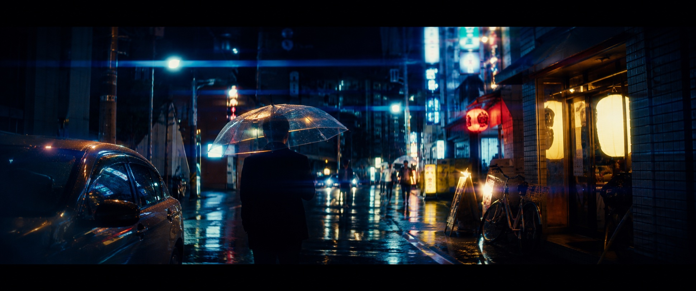

Inverting the Color Multi-Layer Architecture
A standard C-41 color negative film consists of a layered sandwich: a protective top coat, a blue-sensitive emulsion layer, a yellow colloidal silver filter layer to absorb remaining blue light, a green-sensitive layer, and finally a red-sensitive layer resting atop the clear triacetate or polyester base. Redscale photography fundamentally subverts this hierarchy by winding the film backward into the canister so that the plastic base faces the lens instead of the emulsion.
During exposure, light is forced to penetrate the plastic base first. Because color negative film base is impregnated with an orange masking dye to compensate for dye coupler impurities, this base acts as an intense physical warm-color filter. It absorbs virtually all high-frequency blue and violet light before the rays can ever reach the photosensitive layers below, radically skewing the color balance of the recorded latent image.
Exposure-Dependent Chromatic Transformations
The defining charm of redscale lies in its dramatic exposure dependency. Because the red-sensitive layer is the first emulsion layer struck by the incoming light, it receives maximum optical energy. When shot at box speed or slightly underexposed, only the red layer receives sufficient photons to develop, resulting in stark monochromatic images dominated by blood red and charcoal blacks.
When intentionally overexposed by +2 to +4 stops (for example, rating an ISO 400 film at ISO 50 or 25), intense light penetrates through the red layer and activates the green-sensitive layer beneath it. In the C-41 color development bath, the combined dyes produce radiant golden ambers, molten oranges, and warm mustard yellows, generating an otherworldly twilight aesthetic unattainable with standard digital filters.

Safe Experimental Creativity with RfCamera
Physically modifying film cartridges in a darkroom bag carries constant risks of scratching the delicate emulsion, inducing static discharge sparks, or jamming camera advance sprockets. RfCamera brings the unbridled experimental joy of redscale to your smartphone without the mechanical headaches.
Our real-time GLSL shader accurately simulates the progressive red-to-gold color transition as you adjust the exposure compensation slider. You can observe the fiery transformation live in your viewfinder, crafting bold, unapologetic visual poetry while enjoying the peace of mind of an app that is 100% offline, private, and free.